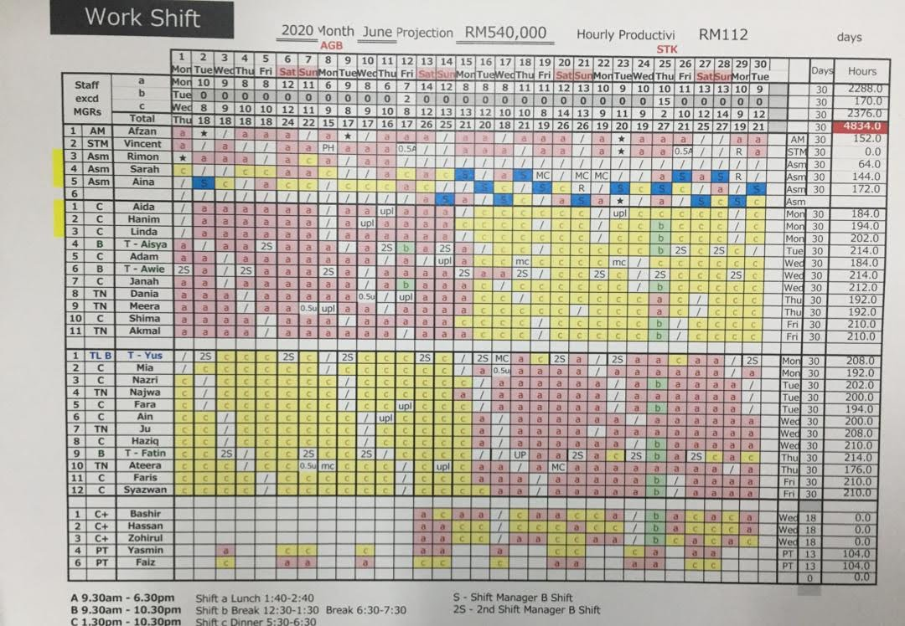
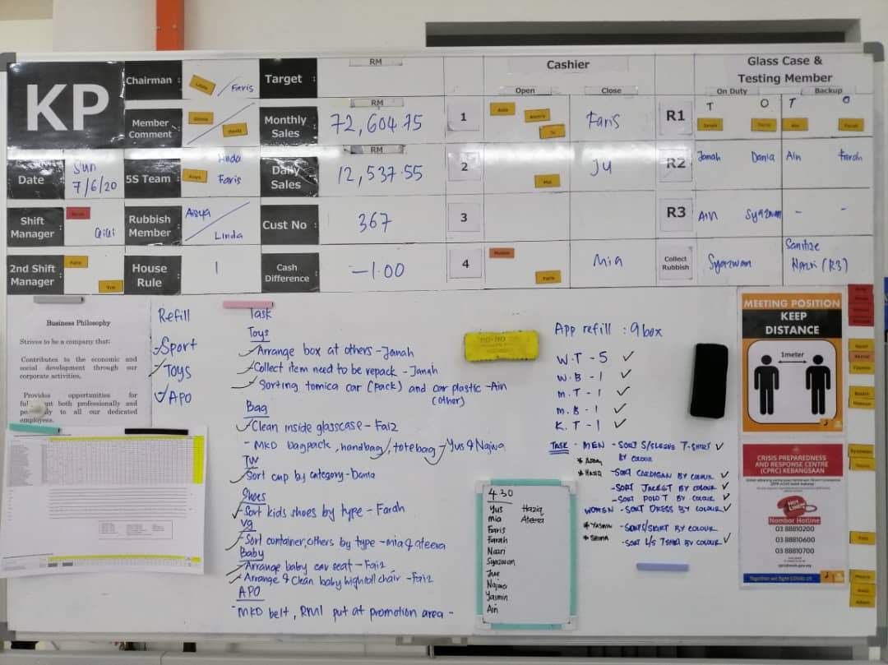
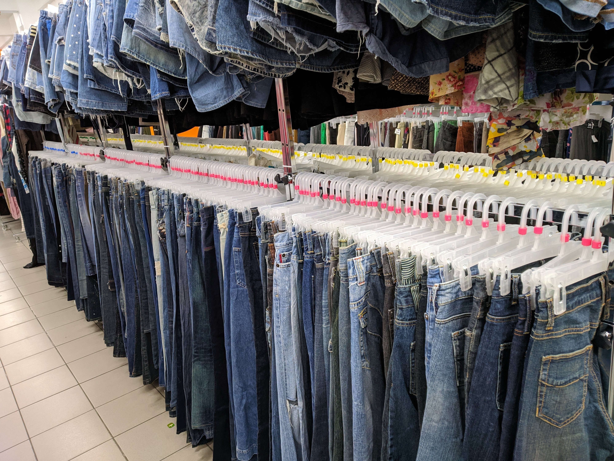

1 / 5

The JJJ Crew
2 / 5

Sanitizing the store
3 / 5

The shift schedule
4 / 5

Daily tasks
5 / 5

In charge of cleaning the apparels
In early 2020, I graduated from my diploma and was in search for a job while I was waiting for my application for my degree. I took a job at Jalan Jalan Japan Bandar Baru Bangi Branch as a sales assistant. Jalan Jalan Japan is a retail store specialising in used items imported from Japan. The parent company is Book-off from Japan. My job scopes were to stock up the store, ensure the items were placed correctly, be the cashier, and help the customers who are in need. This opportunity gave me an eye opener that working in teams is important to complete the tasks given by the management.